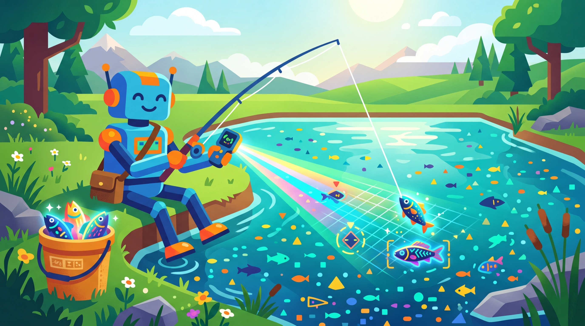

"The LLM labels a thousand examples per minute. The human corrects ten per hour. The magic is knowing which ten actually matter."
A Delegation-Minded AI Agent
Prerequisites
Before starting, make sure you are familiar with synthetic data overview as covered in Section 12.1: Principles of Synthetic Data Generation.
The best labeling workflows combine LLM speed with human judgment. Pure human annotation is too slow and expensive. Pure LLM labeling introduces systematic biases. The optimal approach uses LLMs to pre-label data at scale, then routes uncertain or high-stakes examples to human reviewers. Active learning further optimizes this loop by selecting the most informative examples for human annotation, maximizing the value of every human label. This section teaches you to build these hybrid labeling workflows from scratch. The LLM API patterns from Section 9.2 (structured output and function calling) are essential for building reliable pre-labeling pipelines.

1. LLM Pre-Labeling for Annotation Speedup
LLM pre-labeling uses a large language model to generate initial labels for your unlabeled dataset, a pattern that connects to the broader hybrid ML and LLM architectures explored in Module 11. Human annotators then review and correct these labels rather than creating them from scratch. Studies consistently show that reviewing a pre-existing label is 2x to 5x faster than labeling from scratch, even when the pre-label has errors. The key is that the LLM gets most labels approximately right, and humans only need to identify and fix the mistakes.
1.1 The Pre-Labeling Workflow
Figure 12.5.1 illustrates the pre-labeling workflow with confidence-based routing to human review.
Mental Model: The Teaching Assistant
Think of LLM-assisted labeling as hiring a teaching assistant to pre-grade exams. The TA (the LLM) makes a first pass over all submissions, marking answers with preliminary scores. The professor (the human annotator) then reviews and corrects the TA's work, focusing attention on borderline cases rather than obvious ones. Active learning is like the TA flagging the hardest questions and asking the professor to grade those first, maximizing the value of each minute of expert time. Code Fragment 1 shows this approach in practice.
The following implementation (Code Fragment 2) shows this approach in practice.
Code Fragment 1 demonstrates the Batch API workflow.
# Structure annotation tasks as JSON with labeling guidelines
# Consistent formatting enables both human and LLM annotators
import json
from openai import OpenAI
from dataclasses import dataclass
client = OpenAI()
@dataclass
class PreLabel:
text: str
label: str
confidence: float
reasoning: str
def llm_prelabel(
texts: list[str],
label_options: list[str],
task_description: str,
model: str = "gpt-4o-mini"
) -> list[PreLabel]:
"""Pre-label a batch of texts using an LLM with confidence scores."""
labels_str = ", ".join(f'"{l}"' for l in label_options)
results = []
for text in texts:
prompt = f"""Task: {task_description}
Text: "{text}"
Available labels: [{labels_str}]
Classify this text. Provide:
1. The label (must be one of the available options)
2. Your confidence (0.0 to 1.0)
3. Brief reasoning
Respond as JSON:
{{
"label": "chosen_label",
"confidence": 0.95,
"reasoning": "why this label"
}}"""
# Send chat completion request to the API
response = client.chat.completions.create(
model=model,
messages=[{"role": "user", "content": prompt}],
temperature=0.1,
response_format={"type": "json_object"}
)
# Extract the generated message from the API response
data = json.loads(response.choices[0].message.content)
results.append(PreLabel(
text=text,
label=data["label"],
confidence=data["confidence"],
reasoning=data.get("reasoning", "")
))
return results
# Example: Sentiment classification pre-labeling
texts = [
"This product exceeded all my expectations. Highly recommend!",
"The delivery was okay but the packaging was damaged.",
"Worst purchase I have ever made. Complete waste of money.",
"It does what it says. Nothing special, nothing terrible.",
"I cannot figure out how to set this up. Instructions are unclear.",
]
prelabels = llm_prelabel(
texts=texts,
label_options=["positive", "negative", "neutral", "mixed"],
task_description="Classify the sentiment of this product review."
)
for pl in prelabels:
route = "AUTO" if pl.confidence >= 0.85 else "HUMAN"
print(f"[{route}] {pl.label} ({pl.confidence:.2f}): "
f"{pl.text[:50]}...")
Code Fragment 2 establishes a ML baseline.
# Calculate annotation quality metrics using numpy
# Track agreement rates, label distributions, and annotator reliability
import numpy as np
from sklearn.metrics.pairwise import cosine_distances
def uncertainty_sampling(
predictions: np.ndarray,
n_select: int = 50
) -> np.ndarray:
"""Select examples where the model is most uncertain.
Args:
predictions: Array of shape (n_samples, n_classes) with
predicted probabilities
n_select: Number of examples to select
Returns:
Indices of selected examples
"""
# Entropy-based uncertainty
entropy = -np.sum(
predictions * np.log(predictions + 1e-10), axis=1
)
# Select top-k most uncertain
return np.argsort(entropy)[-n_select:]
def diversity_sampling(
embeddings: np.ndarray,
labeled_embeddings: np.ndarray,
n_select: int = 50
) -> np.ndarray:
"""Select examples most different from the already-labeled set.
Uses maximum distance to nearest labeled example (core-set approach).
"""
# Distance from each unlabeled example to nearest labeled example
distances = cosine_distances(embeddings, labeled_embeddings)
min_distances = distances.min(axis=1)
# Select the most distant (most different from labeled set)
return np.argsort(min_distances)[-n_select:]
def hybrid_acquisition(
predictions: np.ndarray,
embeddings: np.ndarray,
labeled_embeddings: np.ndarray,
n_select: int = 50,
uncertainty_weight: float = 0.6
) -> np.ndarray:
"""Hybrid strategy: weighted combination of uncertainty and diversity."""
# Normalize uncertainty scores to [0, 1]
entropy = -np.sum(predictions * np.log(predictions + 1e-10), axis=1)
max_entropy = np.log(predictions.shape[1])
uncertainty_scores = entropy / max_entropy
# Normalize diversity scores to [0, 1]
distances = cosine_distances(embeddings, labeled_embeddings)
min_distances = distances.min(axis=1)
diversity_scores = min_distances / max(min_distances.max(), 1e-10)
# Weighted combination
combined = (
uncertainty_weight * uncertainty_scores +
(1 - uncertainty_weight) * diversity_scores
)
return np.argsort(combined)[-n_select:]
# Simulate an active learning scenario
np.random.seed(42)
n_unlabeled = 1000
n_classes = 4
# Simulated model predictions (some confident, some uncertain)
predictions = np.random.dirichlet(np.ones(n_classes) * 2, n_unlabeled)
embeddings = np.random.randn(n_unlabeled, 128)
labeled_embeddings = np.random.randn(100, 128)
# Select using each strategy
uncertain_idx = uncertainty_sampling(predictions, n_select=50)
diverse_idx = diversity_sampling(embeddings, labeled_embeddings, n_select=50)
hybrid_idx = hybrid_acquisition(
predictions, embeddings, labeled_embeddings, n_select=50
)
# Check overlap between strategies
overlap_u_d = len(set(uncertain_idx) & set(diverse_idx))
overlap_u_h = len(set(uncertain_idx) & set(hybrid_idx))
print(f"Uncertainty vs Diversity overlap: {overlap_u_d}/50 examples")
print(f"Uncertainty vs Hybrid overlap: {overlap_u_h}/50 examples")
print(f"Hybrid captures both uncertain AND diverse examples")
The low overlap between uncertainty and diversity sampling (3 out of 50) demonstrates that these strategies target fundamentally different types of informative examples. Uncertainty sampling finds examples near decision boundaries, while diversity sampling finds examples in unexplored regions of the input space. The hybrid approach captures value from both, making it the recommended default for most practical applications.
4. Annotation Tools
Production annotation workflows require purpose-built tools that support team management, quality control, pre-labeling integration, and export in standard formats compatible with fine-tuning data preparation pipelines. The three leading tools for NLP annotation each serve different needs.
| Tool | License | Strengths | Best For | LLM Integration |
|---|---|---|---|---|
| Label Studio | Apache 2.0 | Highly customizable, multi-modal, large community | General purpose annotation across text, image, audio | ML backend API for pre-labeling |
| Prodigy | Commercial | Fast binary annotation, active learning built-in | Rapid iterative labeling with model-in-the-loop | Custom recipe system for LLM integration |
| Argilla | Apache 2.0 | Native LLM/NLP focus, HF Hub integration, Distilabel pairing | LLM output curation, preference labeling, RLHF data | First-class LLM pre-labeling support |
Code Fragment 3 demonstrates this approach.
# Label Studio: Setting up a pre-labeling backend with LLM
# This creates a backend service that Label Studio calls for predictions
from label_studio_ml.model import LabelStudioMLBase
from openai import OpenAI
class LLMPreLabeler(LabelStudioMLBase):
"""Label Studio ML backend that uses an LLM for pre-labeling."""
def setup(self):
self.client = OpenAI()
self.model = "gpt-4o-mini"
def predict(self, tasks, **kwargs):
"""Generate pre-labels for a batch of tasks."""
predictions = []
for task in tasks:
text = task["data"].get("text", "")
response = self.client.chat.completions.create(
model=self.model,
messages=[{
"role": "user",
"content": f"Classify the sentiment of this text as "
f"'positive', 'negative', or 'neutral'.\n\n"
f"Text: {text}\n\nLabel:"
}],
temperature=0.1,
max_tokens=10
)
label = response.choices[0].message.content.strip().lower()
predictions.append({
"result": [{
"from_name": "sentiment",
"to_name": "text",
"type": "choices",
"value": {"choices": [label]}
}],
"score": 0.85 # Confidence placeholder
})
return predictions
# To run: label-studio-ml start ./llm_backend
# Then connect in Label Studio: Settings > Machine Learning > Add Model
print("LLM pre-labeling backend configured for Label Studio")
5. Inter-Annotator Agreement
When multiple annotators (human or LLM) label the same examples, measuring their agreement is essential for understanding label quality. Low agreement indicates ambiguous guidelines, difficult examples, or inconsistent annotators. High agreement (but not perfect) suggests well-calibrated labeling. Agreement metrics also help identify when LLM labels are reliable enough to substitute for human labels. Code Fragment 4 shows this approach in practice.
# Compute inter-annotator agreement using Cohen's kappa
# Kappa measures agreement beyond chance between two raters
import numpy as np
from itertools import combinations
def cohens_kappa(labels_a: list, labels_b: list) -> float:
"""Compute Cohen's Kappa between two annotators."""
assert len(labels_a) == len(labels_b)
n = len(labels_a)
# Observed agreement
observed = sum(a == b for a, b in zip(labels_a, labels_b)) / n
# Expected agreement (by chance)
unique_labels = set(labels_a) | set(labels_b)
expected = 0
for label in unique_labels:
freq_a = labels_a.count(label) / n
freq_b = labels_b.count(label) / n
expected += freq_a * freq_b
if expected == 1.0:
return 1.0
return (observed - expected) / (1 - expected)
def fleiss_kappa(ratings_matrix: np.ndarray) -> float:
"""Compute Fleiss' Kappa for multiple annotators.
Args:
ratings_matrix: Shape (n_subjects, n_categories).
Each cell is the count of raters who assigned
that category to that subject.
"""
n_subjects, n_categories = ratings_matrix.shape
n_raters = ratings_matrix.sum(axis=1)[0] # Assume same per subject
# Proportion of assignments to each category
p_j = ratings_matrix.sum(axis=0) / (n_subjects * n_raters)
# Per-subject agreement
p_i = (
(ratings_matrix ** 2).sum(axis=1) - n_raters
) / (n_raters * (n_raters - 1))
p_bar = p_i.mean()
p_e = (p_j ** 2).sum()
if p_e == 1.0:
return 1.0
return (p_bar - p_e) / (1 - p_e)
# Example: Compare LLM labels with two human annotators
human_a = ["pos", "neg", "neu", "pos", "neg", "pos", "neu", "neg", "pos", "neu"]
human_b = ["pos", "neg", "pos", "pos", "neg", "pos", "neg", "neg", "pos", "neu"]
llm = ["pos", "neg", "neu", "pos", "neg", "pos", "neu", "neg", "pos", "pos"]
kappa_humans = cohens_kappa(human_a, human_b)
kappa_llm_a = cohens_kappa(llm, human_a)
kappa_llm_b = cohens_kappa(llm, human_b)
print(f"Human A vs Human B (Kappa): {kappa_humans:.3f}")
print(f"LLM vs Human A (Kappa): {kappa_llm_a:.3f}")
print(f"LLM vs Human B (Kappa): {kappa_llm_b:.3f}")
print()
print("Interpretation:")
print(" 0.81-1.00: Almost perfect agreement")
print(" 0.61-0.80: Substantial agreement")
print(" 0.41-0.60: Moderate agreement")
print(" 0.21-0.40: Fair agreement")
print(" < 0.20: Slight/poor agreement")
High LLM-human agreement does not always mean high quality. If the LLM and a single annotator agree strongly but disagree with other annotators, the LLM may be mimicking that annotator's biases rather than capturing ground truth. Always measure agreement against multiple independent annotators and investigate cases where LLM labels differ from the human majority vote.
Active learning selects the most informative examples for human review, which means your annotators spend their time on the hard cases instead of labeling obvious ones. It is like a teacher who only grades the essays they suspect might be plagiarized.
📝 Knowledge Check
Show Answer
Show Answer
Show Answer
Show Answer
Show Answer
Key Takeaways
- LLM pre-labeling speeds up annotation 2x to 5x by providing initial labels that human reviewers correct rather than create from scratch.
- Confidence-based routing auto-accepts high-confidence labels and sends uncertain examples to humans. The threshold must be calibrated on held-out gold data, not based on the model's self-reported confidence.
- Active learning reduces annotation costs by 40% to 70% by selecting the most informative examples. The hybrid strategy (uncertainty + diversity) captures value from both decision boundary refinement and input space exploration.
- Three leading annotation tools serve different needs: Label Studio (general purpose, multi-modal), Prodigy (fast iterative labeling), and Argilla (LLM-native, RLHF data).
- Inter-annotator agreement (Cohen's Kappa, Fleiss' Kappa) measures label quality. Always compare LLM labels against multiple independent human annotators, not just one.
Active Learning with LLM Pre-Labeling for Sentiment Analysis at Scale
Who: A product analytics team at a consumer electronics company analyzing 500,000 product reviews per quarter across 12 product lines.
Situation: They needed fine-grained sentiment labels (positive, negative, neutral, mixed) plus aspect tags (battery, screen, camera, price, durability) for each review. Manual annotation by a team of 8 contractors achieved 90% accuracy but could only process 2,000 reviews per week.
Problem: At the current annotation rate, labeling one quarter's reviews would take over 4 years. They needed a 50x speedup without significant quality loss.
Dilemma: They could use an LLM for all labeling (fast but 82% accuracy on their domain-specific aspect tags), train annotators to review LLM suggestions rather than label from scratch (faster but still limited by headcount), or combine LLM pre-labeling with active learning to minimize human effort.
Decision: They implemented a three-phase pipeline: (1) GPT-4o-mini pre-labeled all 500,000 reviews with confidence scores, (2) active learning selected the 15,000 most informative examples for human review using uncertainty sampling plus diversity sampling, and (3) a fine-tuned DeBERTa model trained on the corrected labels processed the full corpus.
How: The LLM pre-labeled the full batch in 6 hours using the batch API at 50% discount. Annotators reviewed LLM suggestions (correcting rather than creating labels), achieving 5x their normal throughput (10,000 reviews per week). Active learning prioritized reviews where the LLM was uncertain (confidence below 0.7) and reviews from underrepresented product categories.
Result: The fine-tuned DeBERTa model achieved 88% accuracy on aspect-level sentiment (compared to 82% for GPT-4o-mini alone and 90% for full human annotation). Total annotation cost was $18,000 instead of the estimated $450,000 for full manual labeling, a 96% reduction. The full pipeline from raw reviews to labeled dataset took 3 weeks.
Lesson: Active learning multiplies the value of every human annotation by focusing reviewer time on the examples where corrections have the greatest impact on model quality; LLM pre-labeling changes the annotator's task from creation to verification, which is fundamentally faster.
Active learning with LLM labelers is converging with curriculum learning strategies, where the difficulty and diversity of selected examples are jointly optimized for maximum training efficiency. Recent work on calibrated LLM confidence enables more principled uncertainty sampling by producing reliable probability estimates for when labels need human review. The frontier challenge is developing active learning loops that can simultaneously select informative examples and detect systematic labeling errors from the LLM annotator.
What's Next?
In the next section, Section 12.6: Weak Supervision & Programmatic Labeling, we explore weak supervision and programmatic labeling, scaling annotation through heuristic rules and model-generated labels. The active learning loop described here also benefits from the human-in-the-loop feedback patterns in Section 16.1.